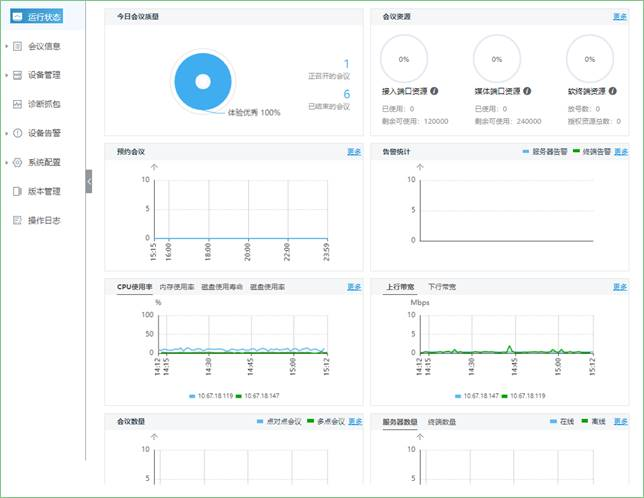
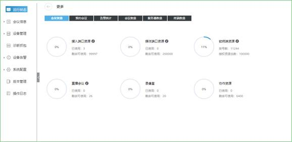
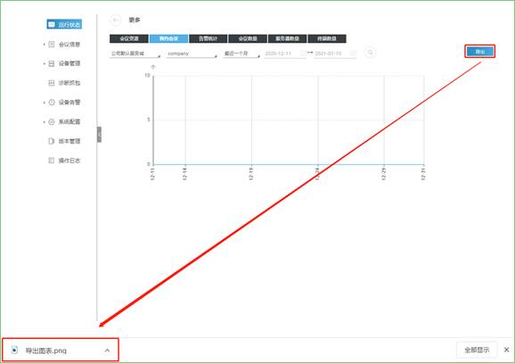
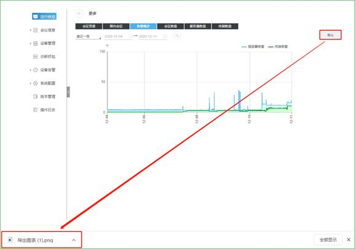
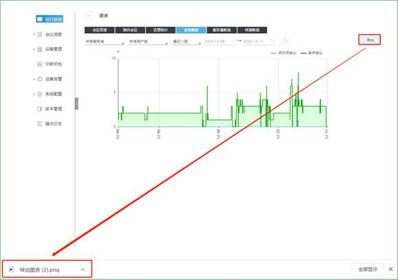
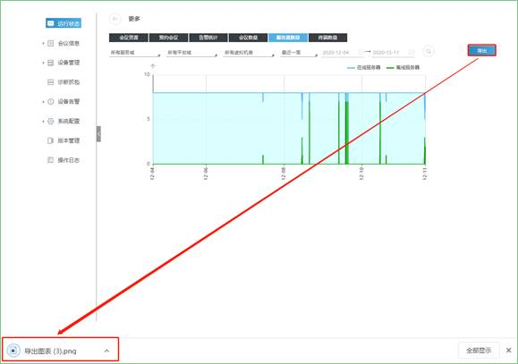
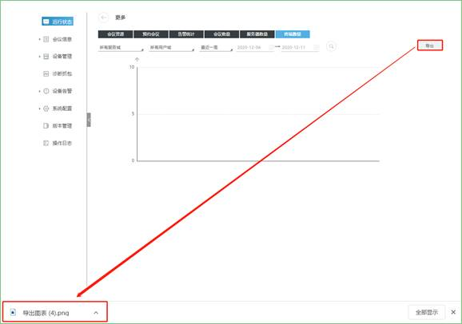

运行状态界面显示网管登录账号所辖域的设备运行状态。

点击更多，可查看详细的运行状态。
会议资源
点击会议资源，在此界面可查看会议资源统计详情，如接入端口资源、媒体端口资源、软终端资源、直播会议、录像室、协作资源，如下图所示：

预约会议
点击预约会议，在此界面将显示预约会议的情况，选择服务域、用户域以及时间，点击 ，再点击【导出】将导出所选范围内预约会议情况的PNG图片，如下图所示：
，再点击【导出】将导出所选范围内预约会议情况的PNG图片，如下图所示：

告警统计
点击告警统计，在此界面将显示服务器告警和终端告警的情况，选择时间，点击 ，再点击【导出】将导出所选时间范围内告警统计的PNG图片，如下图所示：
，再点击【导出】将导出所选时间范围内告警统计的PNG图片，如下图所示：

会议数量
点击会议数量，在此界面将显示点对点会议和多点会议的会议数量，选择服务域、用户域以及时间，点击 ，再点击【导出】将导出所选范围内会议数量情况的PNG图片，如下图所示：
，再点击【导出】将导出所选范围内会议数量情况的PNG图片，如下图所示：

服务器数量
点击服务器数量，在此界面将显示在线服务器和离线服务器的个数，选择服务域、平台域、虚拟机房以及时间，点击 ，再点击【导出】将导出所选范围内服务器个数的PNG图片，如下图所示：
，再点击【导出】将导出所选范围内服务器个数的PNG图片，如下图所示：

终端数量
点击终端数量，在此界面将显示终端的个数，选择服务域、用户域以及时间，点击 ，再点击【导出】将导出所选范围内终端个数的PNG图片，如下图所示：
，再点击【导出】将导出所选范围内终端个数的PNG图片，如下图所示：
